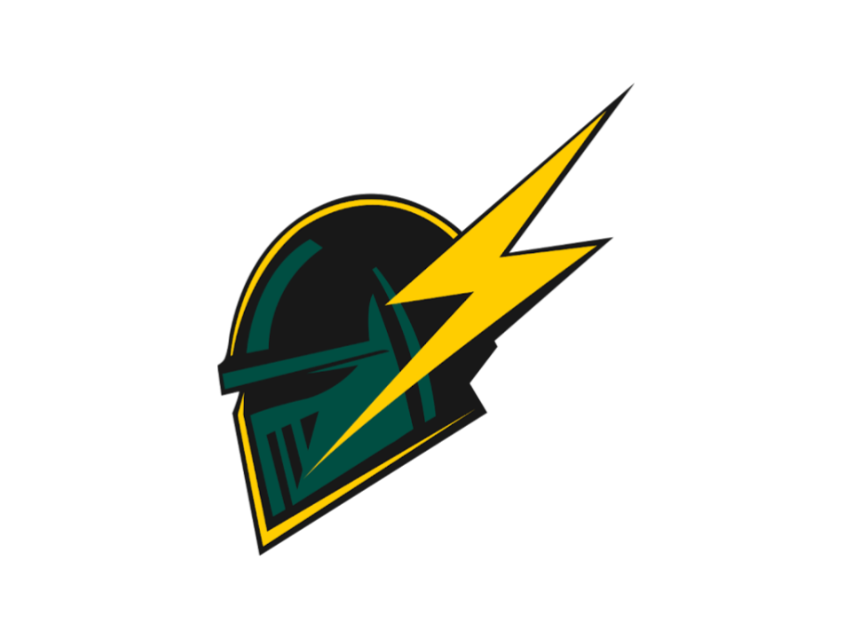

☰

FSAE Telemetry Viewer
Open CSV…
Session
Reset zoom
+ Graph
Table
Export cleaned CSV
Theme: auto
Drop a logger CSV here
or
Open CSV…
Runs entirely in this page. Nothing is uploaded.
Overview
+ Add graph
Drop CSV to load